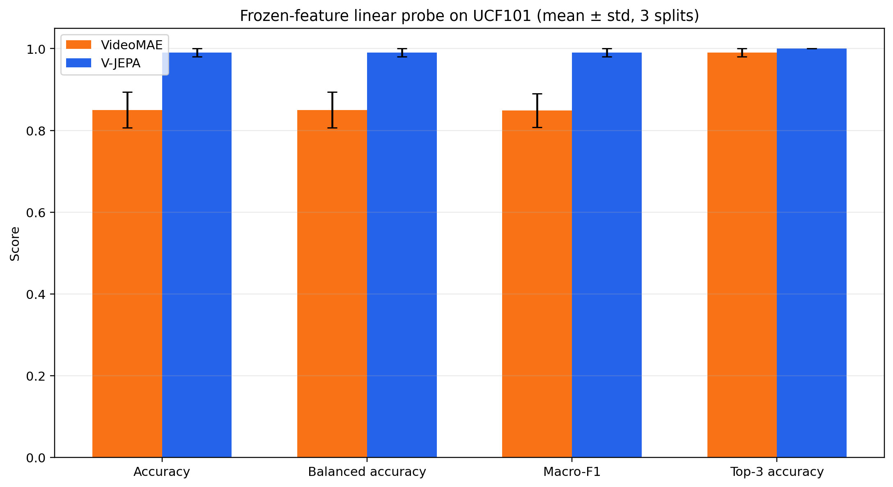
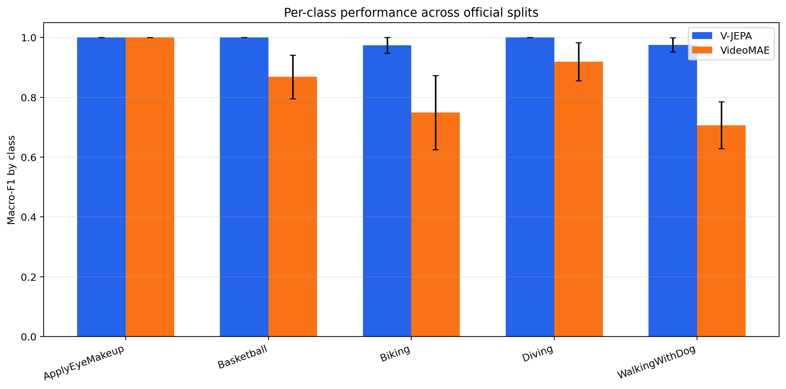
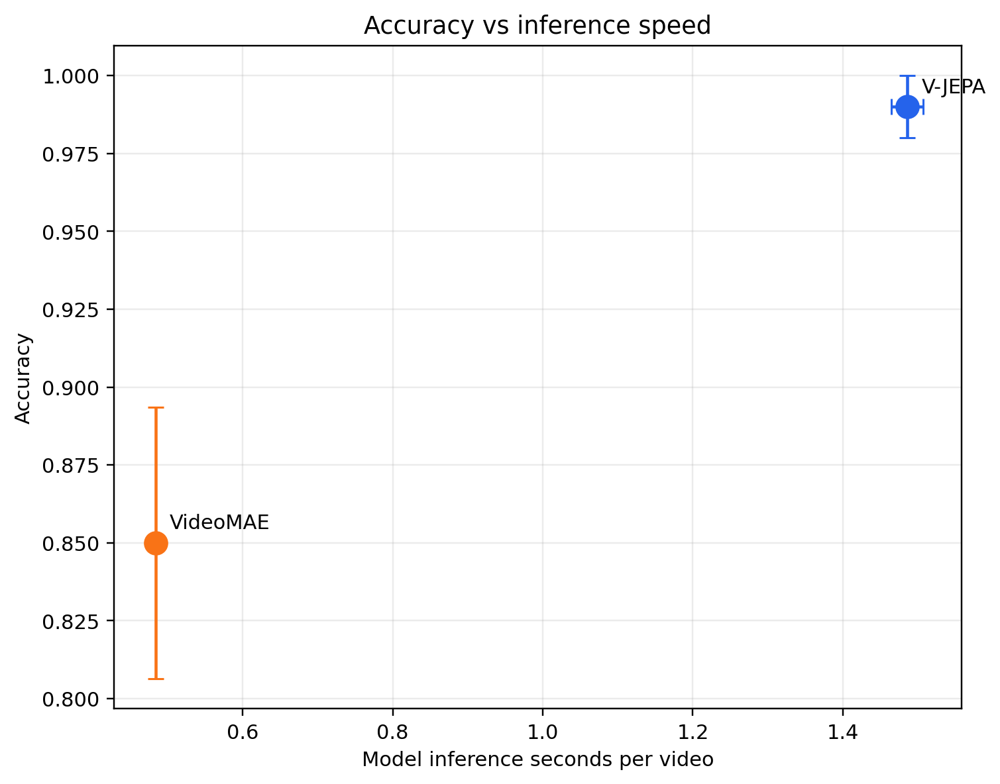
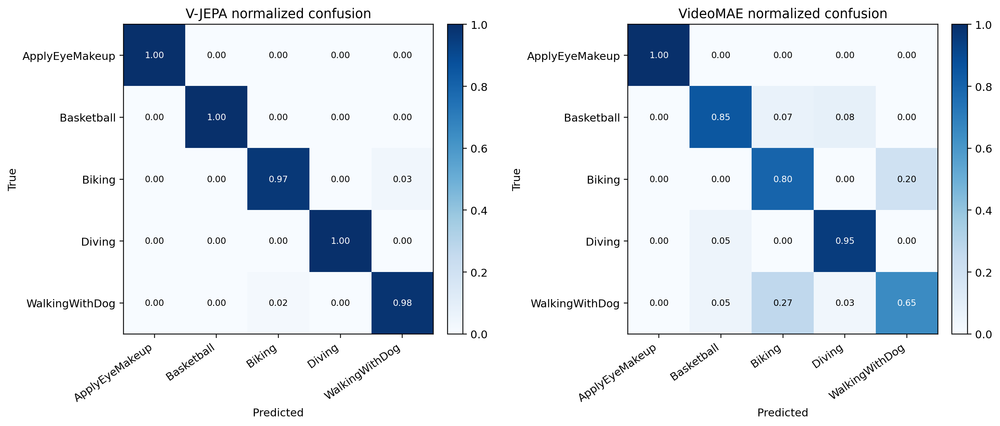
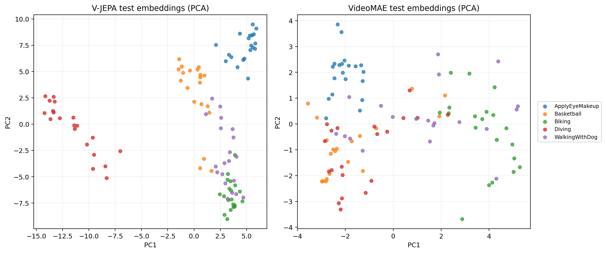
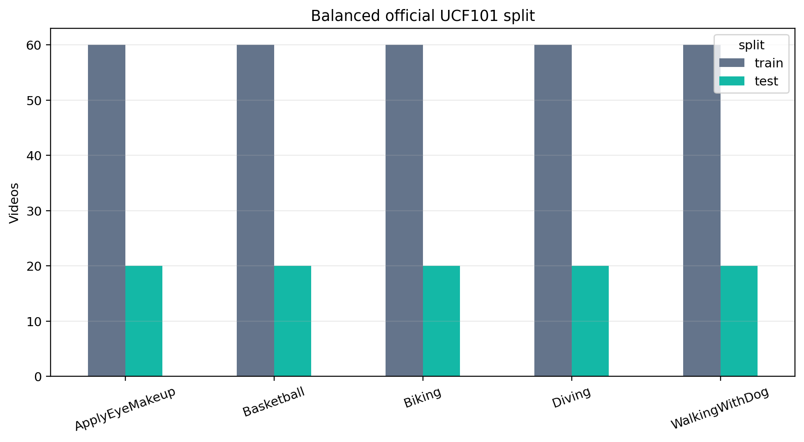
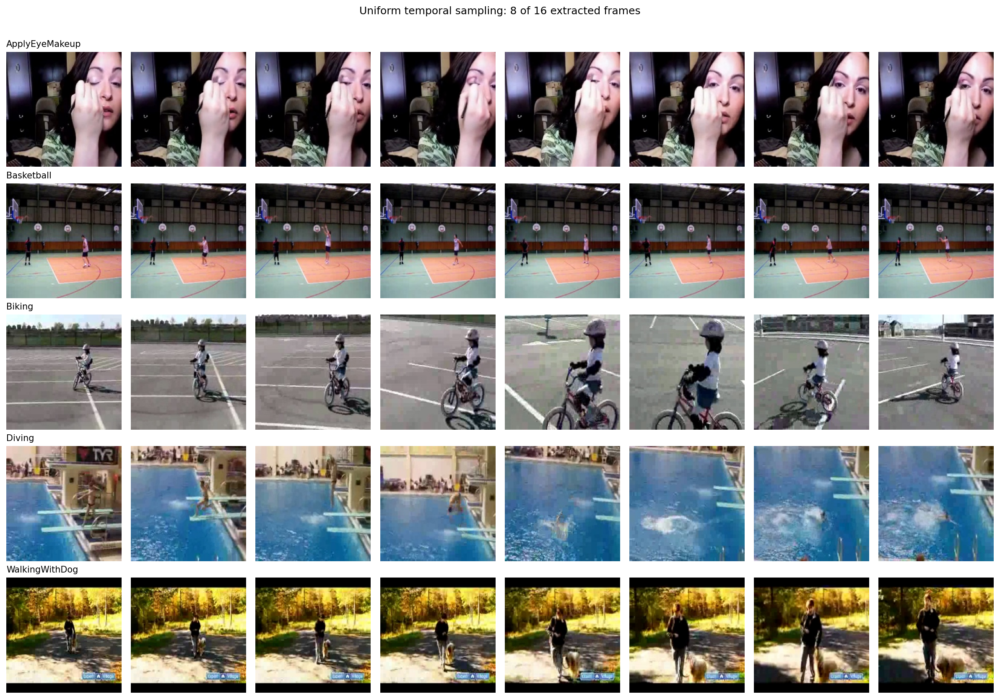
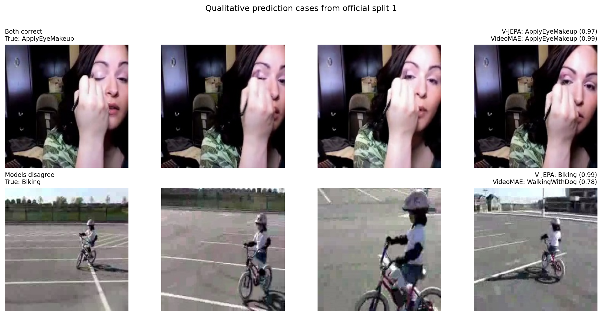
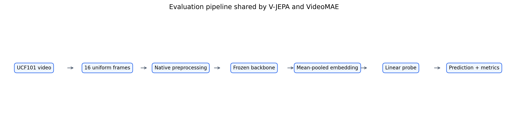
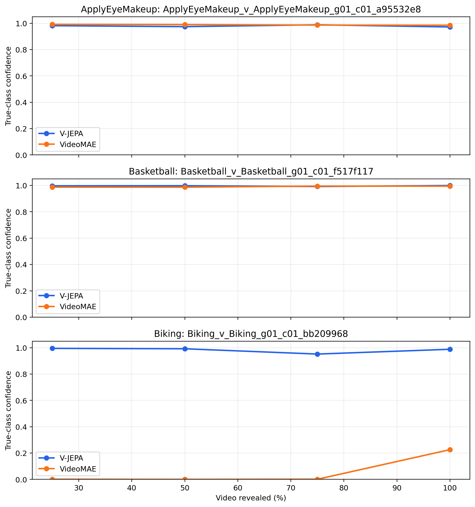

Scope: these conclusions apply to this balanced five-class frozen-feature protocol, not full 101-class fine-tuning.
| split_id | model_name | accuracy | f1_macro | top3_accuracy | inference_time_per_video_seconds |
|---|---|---|---|---|---|
| 1 | vjepa | 1.0000 | 1.0000 | 1.0000 | 1.4629 |
| 1 | videomae | 0.8800 | 0.8769 | 0.9900 | 0.4805 |
| 2 | vjepa | 0.9900 | 0.9900 | 1.0000 | 1.5039 |
| 2 | videomae | 0.8700 | 0.8673 | 1.0000 | 0.4825 |
| 3 | vjepa | 0.9800 | 0.9799 | 1.0000 | 1.4911 |
| 3 | videomae | 0.8000 | 0.8015 | 0.9800 | 0.4885 |
| model_name | accuracy_mean | accuracy_std | balanced_accuracy_mean | balanced_accuracy_std | f1_macro_mean | f1_macro_std | f1_weighted_mean | f1_weighted_std | precision_macro_mean | precision_macro_std | recall_macro_mean | recall_macro_std | top3_accuracy_mean | top3_accuracy_std | inference_time_per_video_seconds_mean | inference_time_per_video_seconds_std | pipeline_time_per_video_seconds_mean | pipeline_time_per_video_seconds_std | train_time_seconds_mean | train_time_seconds_std | feature_dim | device_used |
|---|---|---|---|---|---|---|---|---|---|---|---|---|---|---|---|---|---|---|---|---|---|---|
| vjepa | 0.9900 | 0.0100 | 0.9900 | 0.0100 | 0.9900 | 0.0100 | 0.9900 | 0.0100 | 0.9908 | 0.0091 | 0.9900 | 0.0100 | 1.0000 | 0.0000 | 1.4860 | 0.0210 | 1.5300 | 0.0233 | 0.0181 | 0.0018 | 1024 | mps |
| videomae | 0.8500 | 0.0436 | 0.8500 | 0.0436 | 0.8486 | 0.0411 | 0.8486 | 0.0411 | 0.8607 | 0.0361 | 0.8500 | 0.0436 | 0.9900 | 0.0100 | 0.4838 | 0.0042 | 0.5378 | 0.0049 | 0.0168 | 0.0011 | 768 | mps |









